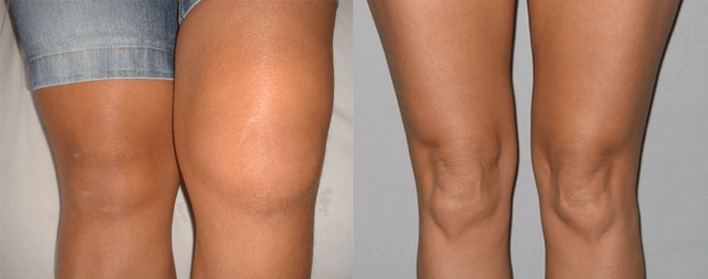

applicazioni
applicazioniTruffa farmaceutica a Italia! Ovvero come i nostri farmacisti avidi tengono nascosto il più efficiente preparato per la cura delle articolazioni!
Dottor Farinelli: «Ricordatevi una cosa molto semplice: i dolori alle articolazioni e alla schiena si possono curare, perfino nella vecchiaia più avanzata»
«Io personalmente invierò ai primi 60 lettori il miglior preparato per curare le articolazioni e la schiena con uno sconto del 70%.»

stage lavorativo, più di 45 anni.
Il dottor Farinelli afferma di poter curare una osteocondrosi di 18 anni in un paio di mesi. Di poter curare un0anziana signora con l’artrite in soli 78 giorni. I dolori alle articolazioni secondo lui, se ben trattati, possono sparire in 4 giorni! In 48 anni di attività ha dimostrato ogni parola con la pratica. Dopo la trasmissione su Rai 3 (con tema "come mantenere in salute le articolazioni a qualsiasi età"), il noto chirurgo ha acconsentito a rilasciarci un intervista.
— Salve Dottor Farinelli. E’ vero quello che si afferma sull’osteocondrosi e sulle malattie delle articolazioni, ovvero che sono “tappe obbligatorie” nell’età?
— Salve Michela! Ovviamente non è affatto vero. Le tappe obbligate dell’età che avanza sono i medici che prendono la nostra fiducia e la buttano nel secchio curandoci per decine di anni senza risultati. Le articolazioni invece, come tutto il sistema scheletrico possono essere curate a qualsiasi età. Non è niente di miracoloso, è scienza.
In più se si conosce il segreto e se si usa un po’ di disciplina, ci si potrà tranquillamente curare comodamente anche da casa, come fanno a migliaia i miei pazienti.
— E in cosa consiste questo segreto?
— Il segreto consiste nel capire perché ci fa male tutto. Nelle enciclopedie si possono trovare fino a 147 possibili cause dello sviluppo di osteocondrosi e artrosi, ma il punti comune è uno. Articolazioni e cartilagine perdono elasticità, e da qui il dolore. Si rovinano per via della scorretta circolazione sanguigna

Ecco in cosa consiste il segreto, se si ripristina una corretta circolazione sanguigna all’interno delle articolazioni, si possono tranquillamente curare le stesse!
— Ma non si ritiene che dopo i 45 anni sia praticamente impossibile ottenere tali risultati?
— Sono tutte fesserie! Io ho rimesso in piedi mia moglie dopo una malattia tremenda, e credetemi sono cos peggiori che avere più di 45 anni.
— E come si può fare a ripristinare la circolazione sanguigna in età avanzata?
— Già da due anni è presente sul mercato europeo un preparato miracoloso per la cura delle articolazioni, si tratta di .in quanto ad efficacia è molto meglio di qualsiasi analogo, non ha solo un effetto molto rapido, ma ripristina anche il funzionamento naturale delle articolazioni,senza avere nessun effetto collaterale (del tutto).
E’ un preparato che permette in breve tempo, letteralmente già a partire da 4 giorni, di dimenticare dolori a schiena e spina dorsale, in un paio di mesi cura anche i casi più gravi.
Il preparato è composto totalmente da soli prodotti naturali. La crema va applicata sulla zona problematica ed aiuta a liberarsi dai dolori di schiena ed articolazioni. Ripristinare i processi è quindi possibile senza operazioni.
Anche con una sola applicazione, attiverete circa 930 000 cellule, che agiranno sulla vostra circolazione sanguigna, così avviene il processo curativo. L’importante è la stabilità.
segna una vera rivoluzione tra i prodotti europei per la cura delle articolazioni. Non era mai esistito un preparato tanto efficace ed utile. E’ comparso solo nel 2017 e sono stati necessari più di 6 anni di test clinici. Praticamente subito, appena apparso sul mercato ha superato i risultati dati dagli analoghi ed al giorno d’oggi è il più efficace preparato per le articolazioni.
— Molto interessante! Racconti di più ai nostri lettori su questo preparato .
— Il nostro centro è stato il primo in Italia ad aver ricevuto l’accesso ufficiale al nuovo preparato per l’osteocondrosi e i dolori a schiena ed articolazioni. Sarò sincero, quando ne ho sentito parlare la prima volta sono semplicemente scoppiato a ridere, non ci credevo minimamente che avesse effetti simili. Tuttavia sono rimasto a bocca aperta dopo aver effettuato i test del caso
I risultati clinici riguardanti :
I test clinici riguardanti il nuovo preparato sono stati effettuati nel 2017 sulla base del Centro di Reumatologia Italiano. Hanno preso parte ai test 3289 persone
- Il 94% ha visto scomparire ogni dolore già entro 5-10 dopo la prima applicazione
- il 91% si è liberato di qualsiasi tipo di dolore
- Il 92% Ha ripristinato la cartilagine dopo il primo ciclo
- Il 98% si è liberato di artrite e artrosi
— E’ veramente incredibile. Ci spieghi però cosa vuol dire questo per le persone con problemi?
— Questo vuol dire che la medicina medievale italiana finalmente arriva a livelli dignitosi, e ci si può curare comodamente da casa in un mese. non congela, non è un antidolorifico, “riavvia” il sistema a livello cellulare. Elimina la causa della comparsa dei problemi e dona nuovamente equilibrio ad articolazioni, spina dorsale e cartilagineе. Il malato non solo si libera dai sintomi, ma elimina anche la radice del problema, le cellule vecchie e lente avranno nuovamente una corretta circolazione sanguigna.
Già dal primo giorno riavvia il processo rigenerativo dell’organismo. Inoltre elimina la sindrome dolorosa, lo noterete subito. In sole tre settimana la cura verrà completata, e soprattutto se si effettua un altro ciclo non si correrà il rischio di ricadute.
aiuta solo in caso di artrite e osteocondrosi?
No, ve l’h o già deto: agisce a livello cellulare, ripristinando la circolazione sanguigna. Cura qualsiasi tipo di problema, collegato con le articolazioni, che sia artrosi, artrite, sciatica, reumatismo, radicolite o osteocondrosi, anche in caso di vertebre incrinate. Lividi, botte, fratture, qualsiasi tipo di problema può essere trattato con questa crema..
— Penso che in molti chiederanno: dove si può acquistare?
Volevamo iniziare una vendita di massa ma non siamo riusciti in nessun meto ad accordarci con i farmacisti, questa crema sarebbe un duro colpo per il loro business. Le personi comprano i medicinali per anni, e i malati sono sempre di più, a loro va bene così.
Per questo ora comprare è possibile solo sul sito ufficialeе. Ci sono dei lati positivi, il preparato in questo modo viene prodotto senza intermediari,per questo possiamo venderlo a 5 volte meno rispetto alle altre nazioni.
La consegna avviene via posta con pagamento al momento della consegna, non è necessario nessun tipo di controllo, si può usare a casa. Non credetemi e basta. Provate voi stessi i preparati di altri produttori. Sono sicuro che nulla avrà gli stessi effetti di , neanche simili..
— Grazie mille dottore per l’intervista! C’è qualcosa che vuole dire ai nostri lettori per concludere prima di lasciarci?
Si! Si, certo. Voglio che voi portiate attenzione al fatto che questo tipo di problemi stanno «ringiovanendo», anche un semplice problema momentaneo dovrebbe farvi riflettere. Nessun medico vi costringerà a forza a curarvi.
RIcordate: le malattie collegate ai dolori alle articolazioni non sono solo scomode, accorciano la vita di 10-15 anni.
— P.S.: Il dottore ha deciso inoltre di offrire ai primi 60 lettori con lo sconto! Passate al sito ufficiale e potreste essere tra questi fortunati.
Intervista, Michela Giada
Foto da fonti libere
Cosa serve per ricevere ?
Durante l’offerta (da alle ) è necessario:
- Compilare il modulo con nome e numero di telefono sul sito ufficiale.
- Attendere la chiamata dell’operatore per definire l’indirizzo di consegna.
- Tra 4-7 giorni (necessari per la consegna) bisogna andare alla posta per ricevere il preparato.
La consegna del preparato è disponibile ovunque in Italia
Ho ordinato questa crema , (purtroppo allora non era in offerta). Mi è arrivata rapidamente e il risultato mi ha lasciato a bocca aperta. Tutti i dolori legati alle ossa sono spariti. Erano anni che avevo dolori a ginocchia e schiena.
Dopo la caccia invernale mi facevano male le articolazioni. Ho letto tante recensioni riguardanti e l’ho ordinato. Non mi aspettavo un grande risultato ma il giorno successo subito dopo l’utilizzo mi sono sentito veramente meglio! Ho iniziato a muovermi bene, le articolazioni non"piangono". Lo raccomando!
Ho ordinato questa crema per mio marito 2 mesi fa. Aveva problemi e dolori alla schiena. Dice che il dolore è scomparso piano piano. Dopo un ciclo di cura non ha avuto ancora "crisi". E io sono contento che fa più cose a casa:)
Valentina:-21 un’ora fa
Ho letto tante recensioni positive, se esiste una crema così potente come fanno ad esserci recensioni negative? Si tratta della truffa di turno o no?
Dottor Lorelli:-21 ore fa
Valentina, purtroppo le persone che vogliono vivere sui problemi altrui non scompaiono mai, per questo compaiono sempre più nuove persone e siti on line che ci copiano. Mi è stato tra l’altro riferito che la maggior parte delle recensioni negative sono state "comprate" da persone importanti in ambito medico, alle quali abbiamo fatto una concorrenza troppo pronunciata. Se avete intenzione di ordinare sul sito ufficiale, vi do una garanzia di risultato al 100%!
Con rispetto, Dottor Luigi Lorelli.
Elisabetta:-19 ore fa
Per quanto mi riguarda mi ha aiutato molto! Avevo il ginocchio gonfio, non riuscivo a piegarlo. Mio padre me lo ha portato, grazie al cielo! Guardate la differenza:

Giordana:-18 ore fa
Una mia collega al lavoro si cura con questa crema, me ne hanno parlato molto bene. E ho notato che lei stessa ha smesso di zoppicare. L’ho ordinata sia per me che per mia mamma. Grazie!
Conosco questo preparato miracoloso! Negli ultimi 5 anni ho provato qualsiasi crema, cerotto e pillola, non mi ha mai aiutato niente. Menomale che mia sorella mi ha consigliato questo preparato. Il problema è scomparso subito sia dalla schiena che dalle gambe.
Interessante. Anche io ho deciso di ordinarlo.
Ottimo preparato, lo prendo da una settimana! Mi sento già meglio
Me l’ha ordinato mia figlia. Non ho mai creduto a questi preparati miracolosi. Ma devo ammetterlo. Non ho trovato nulla che mi abbia aiutato meglio di !
Evelina:-13 ore fa
L’ho ordinato una settimana fa. Ieri già era alla posta. Ho pagato al momento della consegna. Oggi inizio ad applicarlo..
Mi ha fatto male la schiena tutta la notte. È un problema ereditario. Ho già provato con qualsiasi tipo di chiropratico, massaggiatore ed altri del campo. Questi ultimi anni ho avuto problemi anche ad allacciarmi le scarpe. Quando ho letto di molte cose buone avevo comunque timore ad ordinarlo. Un peccato. Ora mi pento di non aver iniziato ad assumerlo prima. E’ da quando ho 17 anni che la schiena non stava così bene! Consiglio di provarlo.
Loredana:-12 ore fa
I dottori mi curano da 3 anni. Spero che mi aiuterà. Ho fatto l’ordine e una ragazza per telefono mi . Attenderò il pacco.
Ho ordinato questa crema. L’operatore mi ha detto che erano rimaste poche confezioni in offerta. Se volete riuscire ad ordinarla sbrigatevi!
Dottor Farinelli:-10 ore fa
Ripeto ancora una volta che per il quale do la mia GARANZIA DI RISULTATO AL 100% si può ordinare solo sulsito ufficiale. Per evitare errori premete semplicemente il tasto rosso qui sotto, lasciate i vostri dati sul sito ufficiale e un nostro consulente vi contatterà per definire tutti i dettagli. Purtroppo questo grande sconto non sarà attivo a lungo, per via della grande richiesta della crema, domani la vendita sarà arrestata per un certo periodo. Quindi se avete parenti o amici con questo problema affrettatevi ad effettuare l’ordine. E per favore evitate i falsi.
Con rispetto, Dottor Luigi Farinelli.